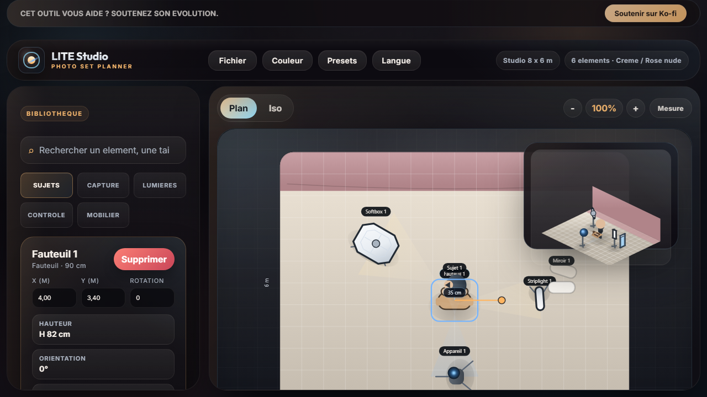

Plan de estudio fotografico
Como construir un plan de estudio boudoir coherente, elegante y facil de fotografiar.
Un setup boudoir depende tanto de la atmosfera como de la tecnica. El plano debe mostrar la posicion del mobiliario, la distancia al fondo, la camara, las zonas de movimiento y la luz principal para mantener una sesion fluida y tranquilizadora.
Mobiliario visibleButaca, banco o espejo deben formar parte del plano desde el inicio.
Luz envolventeUn modificador grande o parabolico ayuda a mantener un resultado suave y favorecedor.
Fondo y decoradoLa eleccion del fondo influye directamente en la sensacion de intimidad, lujo o contraste.
Respeto por el sujetoUna implantacion limpia reduce dudas durante la sesion.
